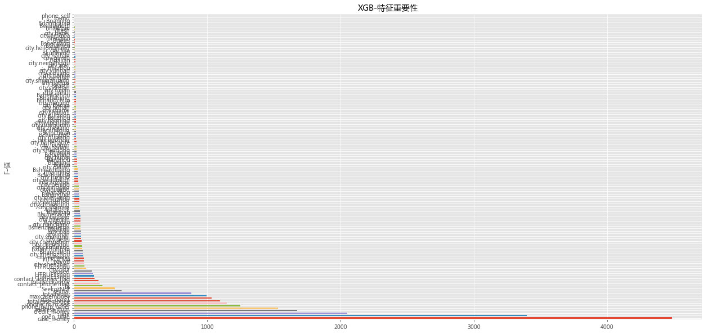
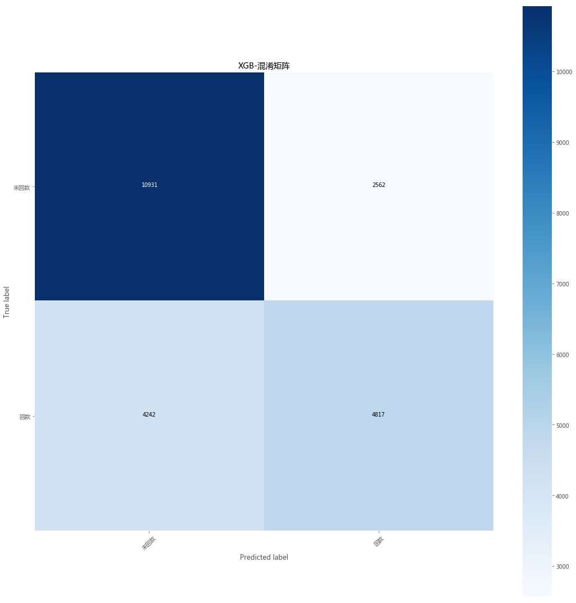
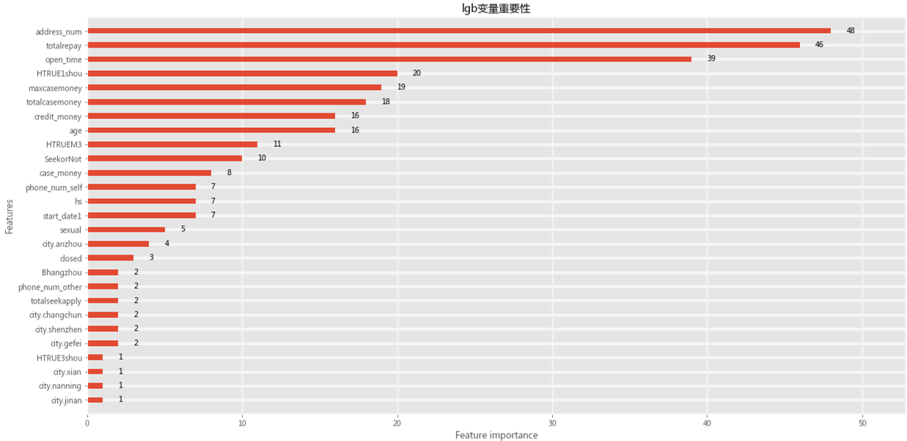
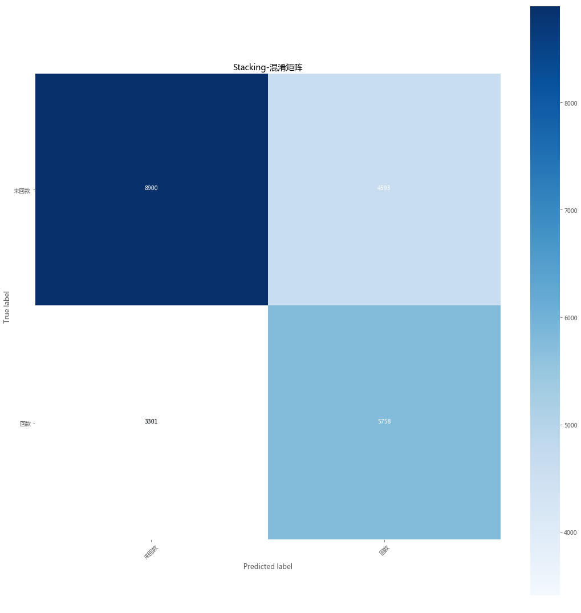
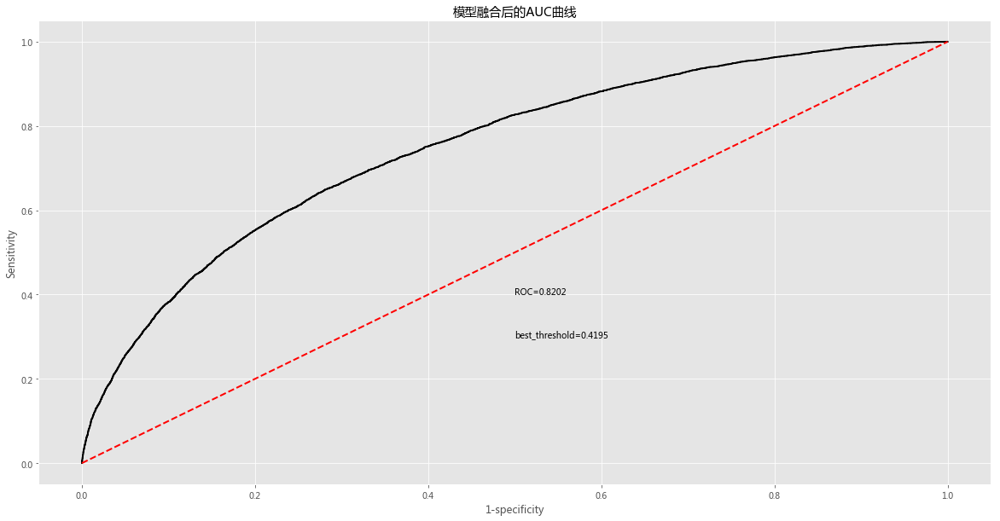
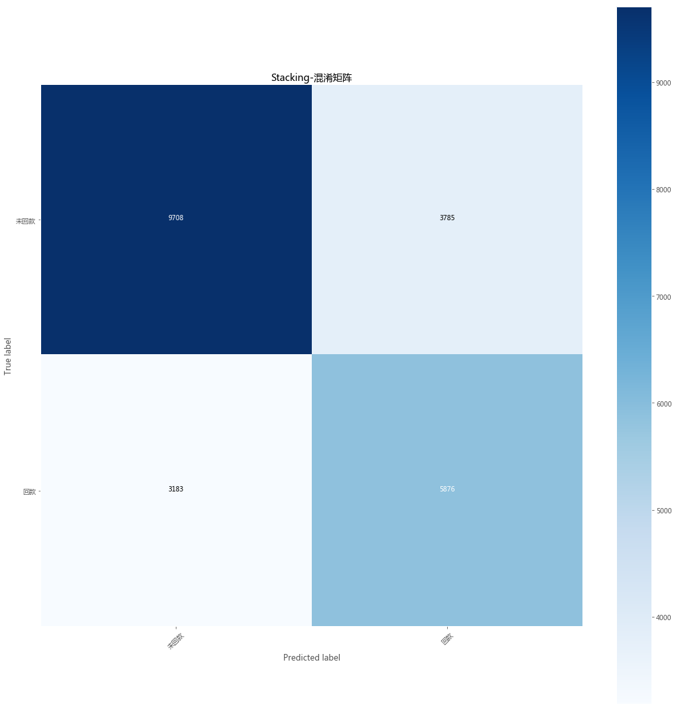
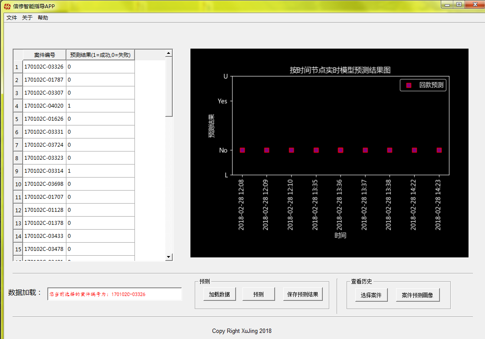

信修问题的需求分析
数据挖掘模型的构建
如何落地
1.预测是否回款(可以看到提报信修与否的预测变化)
2.预测信修成功与否
3.建立规则集预测查找方向(催收系统应该首先实现该功能)
数据来源： 接单时间在2017年1月至2017年9月的招商案件
构建特征： 案件基本特征，债务人基本特征，法务操作特征
最终算法构建： lightGBM + XGBboost ==> Stacking
注：
1.‘特征’的意思就是业务中的所说的影响结果的因素（下文同样意义）
2.下面要展示的就是我们用了哪些特征，用了什么样的策略，落地的方式
建模策略： 尽量精简的特征 + 复杂数据挖掘模型
原因： 1.上线成本低；2.特征多或细意味着模型融入的噪声越多且波动越大
数据模型：lightGBM及XGBoost
Stacking
Grid调参(暴力参数学习）
注：
1.五个名词的意思就是我们的工作
2.模型替我们做了哪些事呢？(答案：自主学习策略，最优策略选择，影响因素重要性选择）
3.直白一点：数据交给机器学习算法(模型)，‘算法’自己通过训练的数据学习数据中蕴含的逻辑和复杂关系，然后用于去做一些它擅长的事情，因为他是经过严格训练过的，所以我们相信他能干好！




截止今天下午2点,第2个问题的model还没出来。


最终模型已经确定
最终特征会根据变量重要性做调整
本周提交项目所有内容
来了案件不论是有没有提报信修的案件（未提报信修特征为0，提报信修特征为1）
基于当前拿到的案件信息预测该案件未来的回款
模型可以做定时预测
可以通过嵌入催收系统，对案件做定时预测，从而刻画整个案件委案周期的信修有效性的案件画像
可以做成桌面应用程序(软件直接后台连数据库，做信修案件有效性的画像，(该方案不需经过催收系统，现在已经基本实现)

https://dataxujing.github.io/xx
/